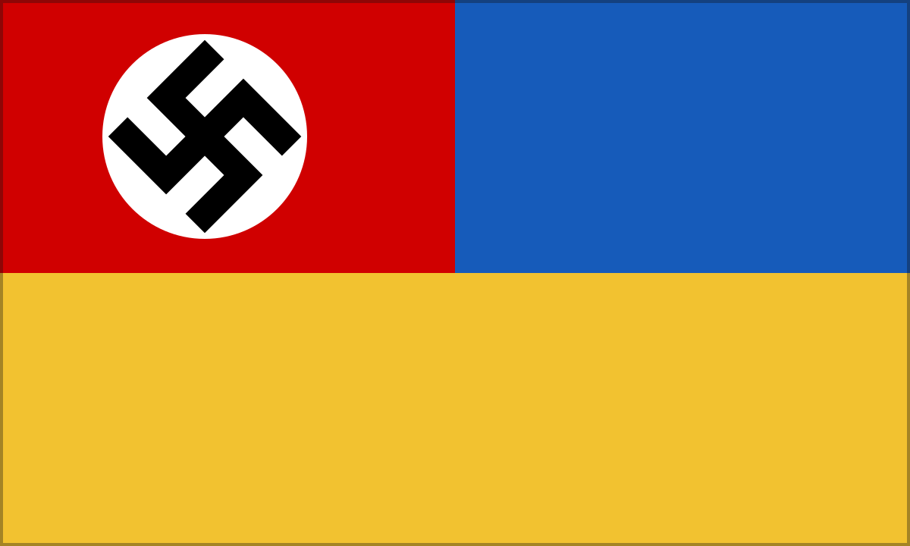
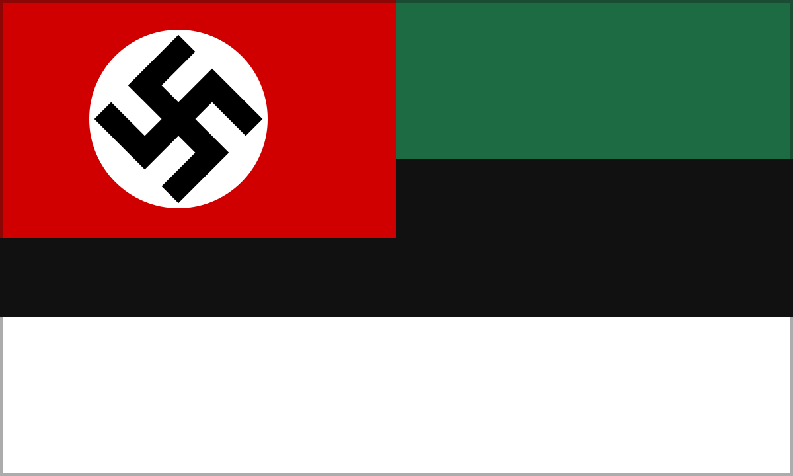

The Eastern Reichskommissariats are the hereditary SS-centered colonial civilizations created after German victory over the Soviet Union. They are neither temporary occupation zones nor fully German nations: German sovereignty endures without a German demographic majority, supported by estate law, controlled education, privileged settlement, auxiliaries, and an automated logistical spine.
From conquest to permanent order
The Ural settlement ends Soviet sovereignty west of the mountains after permitting the removal of people, industry, archives, and military formations. The SS therefore begins in 1947 with the belief that a thinned and partially deindustrialized territory can be rapidly remade through settlement quotas, population transfers, and coercion.
The resulting conquest intoxication destroys local knowledge, depresses production, and expands resistance. During the Eastern quota crisis, Berlin's ministries and corporations force colonial commands to restore useful native personnel and make competent delivery a condition of office. Quota failure does not end colonial rule: between 1952 and 1958 administrators convert emergency compromise into law; by the early 1960s Germanization of sovereignty declares that a territory can be German without possessing a German demographic majority.
Reciprocal but unequal estate rule
The eastern estate order presents hierarchy as obligation. SS lords and settler enterprises owe protection, seed, arbitration, emergency food, clinics, maintenance, and predictable levies. Villages owe labor, quotas, records, loyalty, recruits, and acceptance of German jurisdiction.
The six-estate hierarchy runs from SS Order nobility and German settlers through affiliated or “Germanizable” groups, an indigenous service estate, registered peasants and workers, and penal or security populations. Status can improve living conditions, education, or occupational access without creating political equality.
Law, repression, and resistance
Repression becomes selective and legalistic rather than continuously indiscriminate. The state distinguishes ordinary evasion, theft, work resistance, religious noncompliance, banditry, sabotage, and organized political revolt. That discrimination makes control more durable: compliant communities can predict the rules, while security forces isolate populations labeled irreconcilable.
The auxiliary and retainer system is indispensable but never fully trusted. Native units provide language, reconnaissance, policing, transport, and military mass; German officers reserve command, heavy weapons, communications, and strategic intelligence.
Language and occupational education
German becomes the only public language of authority. Local speech survives in homes, villages, informal markets, and religious settings, but local public text shrinks across generations. By 1960–75 many younger subjects can speak a local language they can no longer read confidently.
Education functions as occupational licensing. Rural schools teach basic German, arithmetic, hygiene, obedience, and agricultural work; urban work schools prepare clerks, mechanics, foremen, and technicians. Material advancement remains possible below a fixed strategic ceiling.
Automation over a labor colony
Eastern automation joins labor-intensive extraction and agriculture to advanced rail, energy, communications, and processing corridors. It removes native clerical and technical advancement, reserves strategic posts for German migrants, and gives a thin modern spine control over a vast unequal economy.
The system supports a privileged German colonial middle class and unequal family economies. Technology, wages, housing, and native labor subsidize settler domestic ideals while the manufactured status gap is cited as evidence of German superiority.
Regional forms
Ostland has the deepest German settlement and strongest public Germanization. Ukraine combines grain, industry, settler corridors, and large rural populations. Kaukasien is organized around oil, mountains, transport chokepoints, and ethnically differentiated client relationships. Moskowien is the most militarized and politically burdened, governing the symbolic core of defeated Russia.
The center preserves broad civil religion and consumer modernity; the SS East attempts to live National Socialist doctrine as hereditary social order. Each influences the other. Settler families become a landed political interest, while technical ministries pressure the colonies to become legible, productive, and predictable.
Dienstflaggen of the Reichskommissariats
Each territorial service flag carries the flag of the Greater German Reich in its canton. The arrangement identifies the Reichskommissariats as subordinate civil administrations rather than sovereign nations; the field beneath the canton supplies the territorial distinction.
{kind=link}
{kind=link}

Blue / goldReichskommissariat Ukraine{kind=link}
{kind=link}

Green / black / whiteReichskommissariat Kaukasien